We are the QuiCK Sloths.
We are the Quantum Computing department at the Institute for Integrated Circuits and Quantum Computing at JKU Linz.
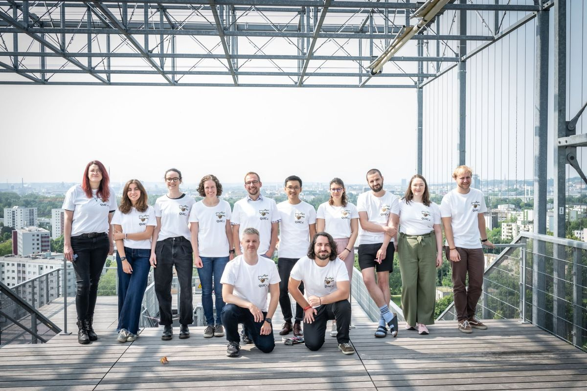
Quantum science is among the most exciting fields of technology of our time. Our interdisciplinary team works at the intersection of computer science, physics and mathematics and develops new approaches to central challenges in science and applications.
In academic research, we prioritise quality over quantity and first think about which problems we want to tackle with which methods — and why that matters. We may therefore publish less than other research groups, but we aim for our publications to have a lasting impact. This approach has been rewarded with several high-profile national and international research grants.
In university teaching, we follow an Anglo-American teaching philosophy that encourages curiosity and collaboration and puts deep understanding at the centre. For this approach we received a total of three Kepler Awards for excellent teaching, in 2023 and 2026.
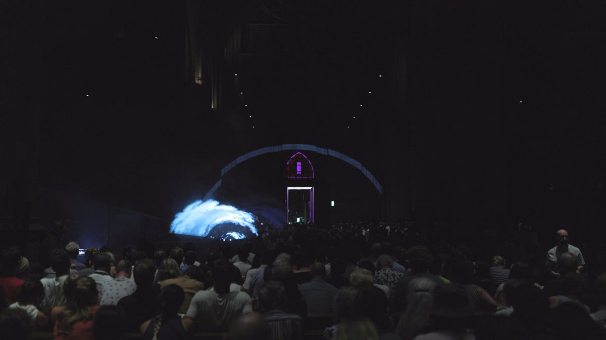
In the area of social engagement, we have co-initiated successful collaborations at the intersection of art and science: “The Sound of Entanglement” opened the Ars Electronica Festival 2024 (with over 3,000 visitors). For it, we received the Kepler Award for science communication in 2025. Spurred on by this success, we are currently producing our own documentary about the current state of quantum computing, with filming locations in Innsbruck, Munich, Pasadena and Linz.
So there is plenty to look forward to.
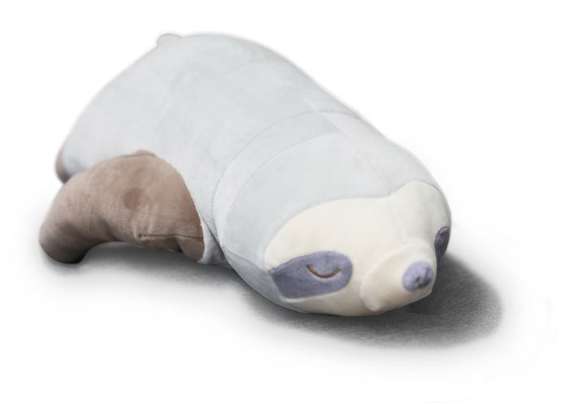
We love presenting our work to the public
The Sound Of Entanglement opened the Ars Electronica Festival 2024 in Linz's Mariendom cathedral and has since also been performed at Johns Hopkins University in Washington DC.
For 2 years now, Nina Brandl has represented our group at “Sciencity – die Brainstage” on Linz's main square.
Alexander Ploier regularly presents The Sound Of Entanglement in interviews and at events, such as the Pint of Science Festival 2026.
Johannes Kofler talks about his work in podcasts such as “Quanten in der Industrie” and the “Paradox Podcast”, as well as in an interview with Ö1.
Beyond that, our scientists regularly take part in public outreach events — for adults and for children alike.
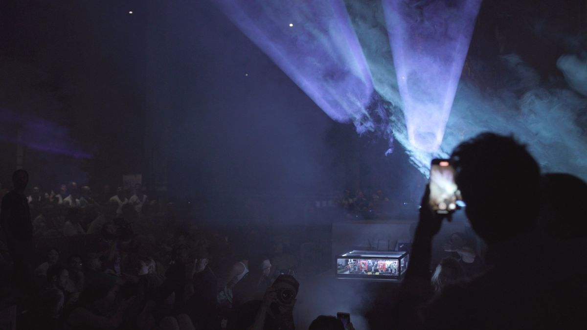
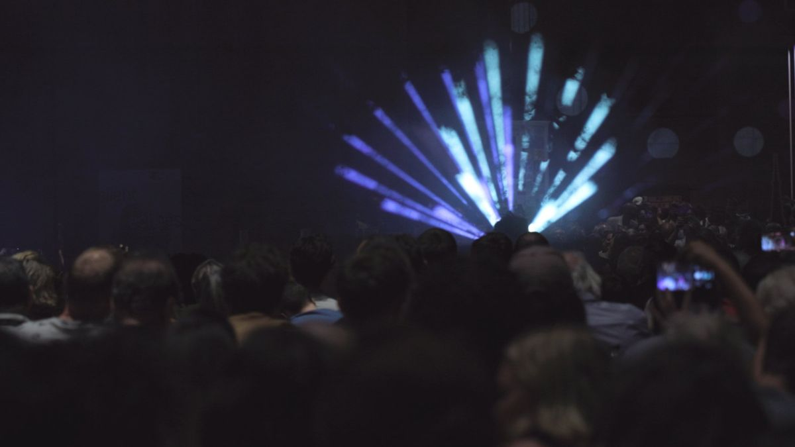
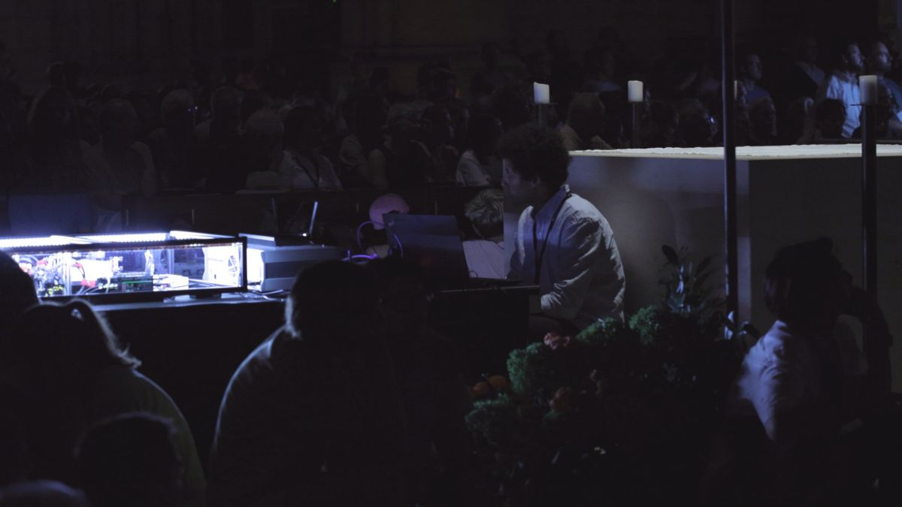
More impressions of “The Sound of Entanglement” at the Ars Electronica Festival 2024
Some successes of our team
Kristina Kirova
Richard Küng for the paper “Predicting Many Properties of a Quantum State with very few Measurements”
Johannes Kofler, Alexander Ploier and Richard Küng for The Sound Of Entanglement
Kristina Kirova for her video “explaining a novel quantum framework” in the OxA Science Association's Advent Calendar
Kristina Kirova and Jadwiga Wilkens in the Best Practice category for their teaching concept in the course UE: Quantum Computing
JKU Kepler Awards
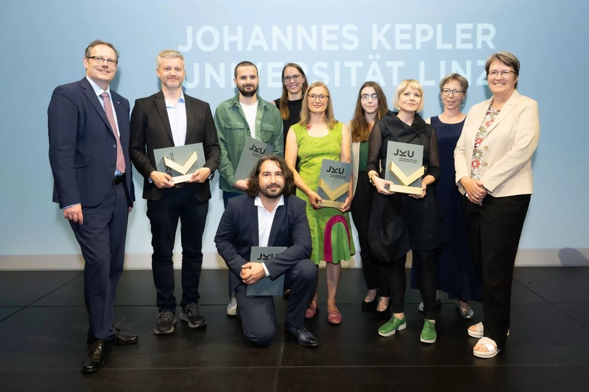
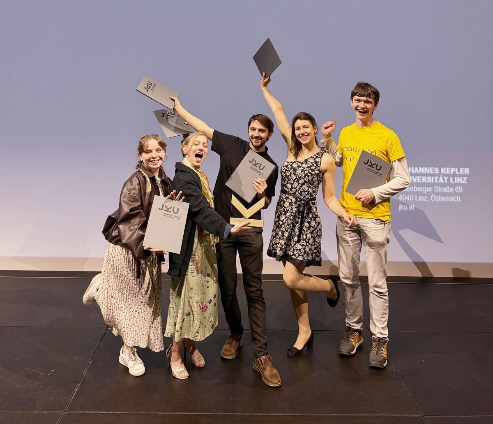
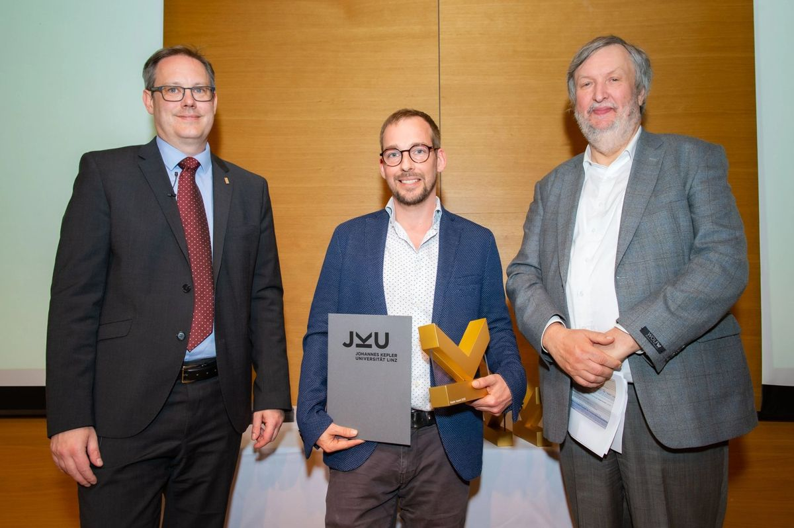
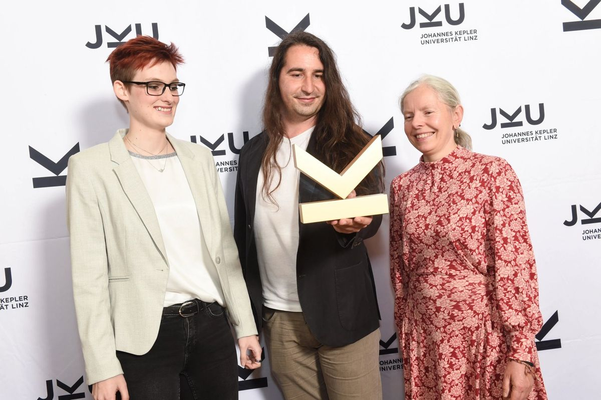
Awards and impressions
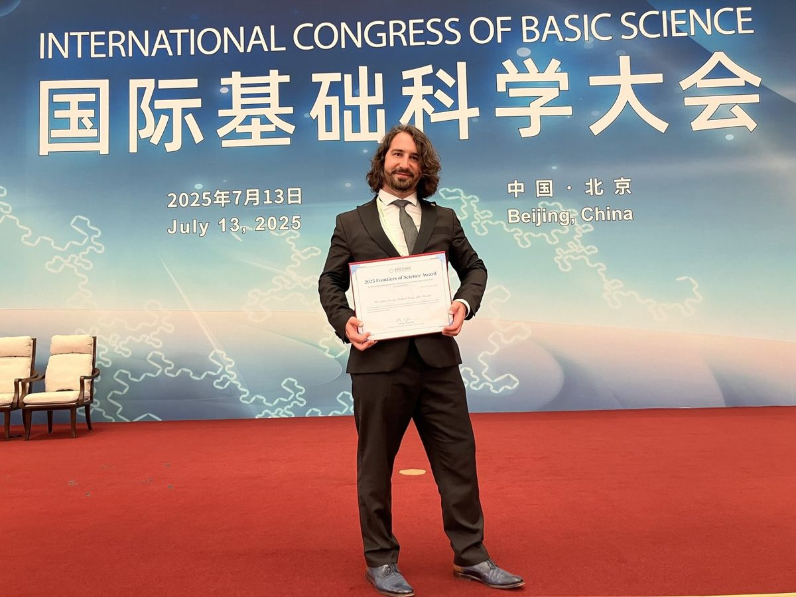
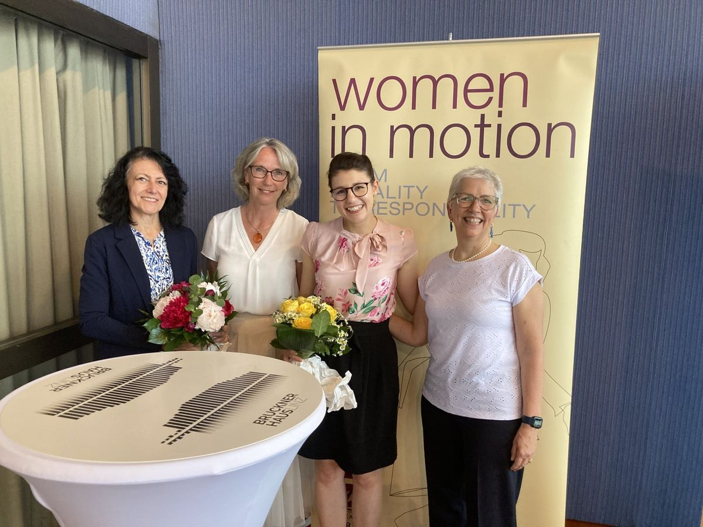
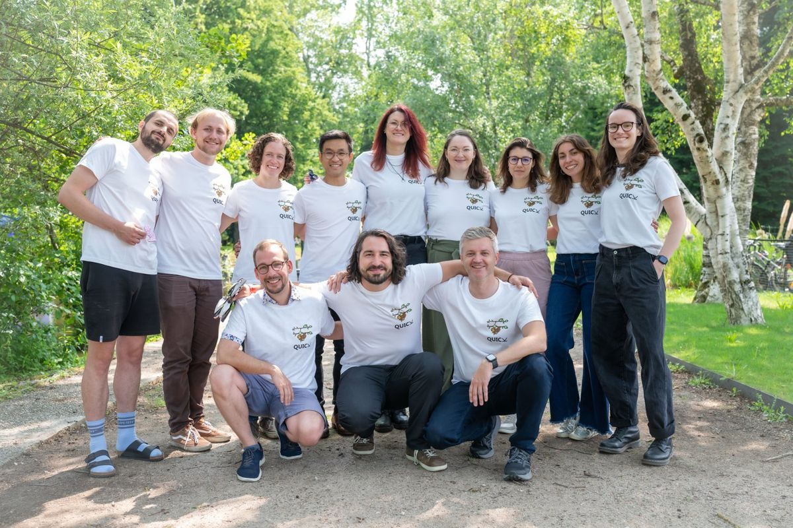